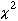
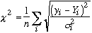
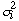

Modifying : PKSELECT, PKRM, pkrmi, pkrmz, PKCLEAR, PKCLEAN, PKRESET, POINT->PK, SETPEAK, SETPEAK2
Integrating : INTEG, MSKINTEG, mskread, mskwrite, MSKMODIF, MSKCONC
The Gifa program has a complete capability to detect,
integrate, line fit and manipulate peaks.
This facility is based
on an internal structure holding information on the last peaks
detected. This internal structure is called the peak-table. 3 such
peak tables are simultaneously held in the program, respectively for
the 1D, 2D and 3D data sets. Peak tables can be loaded, listed, read
and written onto disk, and peaks can be selectively removed form the
table. The commands relative to the peak table always refer to the
current peak table, as defined with the DIM
context.
The peak table is used by the peak-picker module,
integrator module, the line fitting module and the linear prediction
module.
These commands permit to perform an automatic peak picking of the
peak in the current data set (1D, 2D or 3D).You have first to choose
a "value-window" which will be used by the peak-picker to
select peaks in the data-set, the MINIMAX
command permits to select the upper and lower bound for this window.
One way of doing is by searching for the largest and smallest
points in the data-set with the MAX command, which set the default
values for MINIMAX. However, the
smallest value has usually to be reset by the user to a more
realistic value. For instance you can compute the mean level of noise
with the EVALN command, and
enter the noise level time a given scalar as the minimum intensity
for a peak :
point ;select an empty
area
max evaln %% minimax
(4*$noise) % ; loads the value
The command PEAK
will then find all the local maxima which lies within the upper and
lower bounds in the data-set, and load the peak table. It will search
for peaks only in the currently defined ZOOM window. The peak table
will restrict its search to the currently displayed spectrum, thus
permitting to perform a peak-picking on a restraint area of the
spectrum by zooming at it. When using PEAK
in 2D and 3D, you will be prompted for a packing radius. Giving a
non-zero value has the effect of "packing" or "linking"
all the peaks which are less than n points apart from each other into
the larger one, thus removing the entries of the smaller ones from
the peak output.
The macro peak_pick
has been designed to help in this process, and is called from the
GUI.
These commands are the basic commands for displaying the peak table.
pklist i j will list the contents
of the current peak table to the screen from peak i to peak j.
pklist %% will list the complete peak table.
The origin of the peak table (picker, integrator, LP, etc...) is given, and
all the descriptors of each peak. The unit used for the coordinates of the peaks
depends on the context UNIT. This command
can be successfully used with the CONNECT
- DISCONNECT commands to generate listings.
It is a macro, so can modify it to fit you specific needs.
In the Peak menu, REFPEAKS
is used instead of SHOWPEAKS,
in order to display, at each time the screen is refresh, the peak table.
The commands SHOWPEAKS and PLOTPEAKS
display respectively on the screen or on the current plot, the content of the
peak table. SHOWPEAK permits to highlight
a specific peak in the peak table, by drawing a cross. SHOWPEAKS
and SHOWPEAK uses the current definition
of SCOLOR.
These commands are the basic commands for the modifying the
content of the peak table.
PKSELECT
permits to select specific entry into the peak table. Non selected
entry will be lost. PKCLEAR
removes all entries from the peak table. It is thus equivalent to
PKSELECT 0. On the other hand
PKRM permits to remove a single
entry in the current peak table.
The two macros : pkrmi
and pkrmz have been designed to
graphically help the user in removing peaks. pkrmi
remove one peak, clicked by the user; pkrmz
removes all the peaks located within one region.
PKCLEAN
permits to remove entries in the peak table with intensities smaller
than a given value. PKRESET
reload the intensities in the peak-table, as found on the data-set.
POINT->PK adds the
content of the point stack (see above) to the current peak table.
This permits to interactively add missing peaks in the peak table.
SETPEAK and SETPEAK2
are other commands for modifying the content of the peak table : the
parameter of the peaks can be manually entered with these commands.
SETPEAK permits the user to
enter all the parameters of the peak, while SETPEAK2
requires only the coordinates.
These two commands permits to read and write peak tables on the disk. The files created are in text format one peak per line in free format. When reading with PKREAD, the values read can either be added to the current peak table, or used as a new peak table. PKREAD loads all the values as stored in the file, thus the intensities are also reloaded, the command PKRESET permits to compute again the intensities from the peak position. PKRESET is also useful when the data set has changed.
These commands permit to perform mathematics on the 2D peak table. PKPROJ will load the 1D peak table with content of the 2D peak table projected along one dimension. PKSYM will symetrise the 2D peak table either removing or adding non symmetrical values.
INTEG integrates all the peak
found in the peak-table. This is an implementation of the PARIS
algorithm (V.Stoven et al. J.Magn.Reson. 82-1). The integration of a
peak is performed by finding a contour spanning the largest extension
of the peak (the amoeba); the sum of the points under this amoeba is
then computed. The defined amoebae are stored as a matrix within the
program.
The amoeba is determined by four criteria, with four
parameters associated : RATIO, SLOPE, THRESHOLD, and RADIUS. The
first criterion that will trigger will determine where the extension
of the amoeba should stop.
RATIO triggers when the ratio between
the largest point in the peak and the current evaluated point gets
below RATIO.
SLOPE triggers when the slope changes. A value of 0
will be triggered anytime the slope changes from negative to positive
(thus starting to climb on another peak); a larger value will permit
more freedom on the slope.
THRESHOLD will trigger whenever the
evaluated point is below the (absolute) value of THRESHOLD.
RADIUS
determines the maximum extent of the amoeba from the central peak.
When using the integrator, the noise level and the systematic
offset of the surface should have been evaluated with the EVALN
commands
There are two additional contexts that determine fully
the PARIS module : SIGN_PEAK
tells the peak-picker if the peaks are to be found either as positive
peaks or as negatives peaks. ZERO_QU
tells the integrator that the amoebae should be computed on the
absolute value of the surface, (but the integrator will still work on
the normal surface). This is very useful when working on NOESY
spectra where there is zero-quantum coherences signals (the
integration of which is zero).
The SHOW
AMOEBA command shows the amoebae that have been found at
the last integration step.
The MSKINTEG
will integrate the peaks as defined by the current peak table and
mask (amoeba) matrix. This command permits to integrate several
experiments using the same amoeba definition. The amoeba matrix can
moved around with the PUT and
GET commands. The 2 macro
mskread and mskwrite
permit to read and write directly amoeba matrices along with peak
tables.
mskread and mskwrite
are 2 macros meant for storing on file and retrieving the current
peak and amoeba definitions.
The amoeba can also be modified with
the MSKMODIF and MSKCONC
commands which permit respectively to set a given pixel to a given
peak (or to remove it from the amoeba definition), and to concatenate
two amoebae.
These commands start a line fitter, based on a Levenberg-Marquardt minimiser, convergence is determine either by the number of iteration (context ITER) or by the size of the step (context TOLERANCE). Fitted line can be either Lorentzian or Gaussian, as chosen by the parameter of the command LINEFIT. The content of the peak table is used as starting values, and the result of the fit is stored back in the peak table. The quality of the fit is estimated with a value, which is computed as the sum of the residues : 
Where Y is the recomputed spectrum, y is the current spectrum and is
the variance of the noise, estimated from the NOISE command. Thus a correct
fit corresponds to a final equal
to 1.
Optimized parameters are returned as updated values in the
peak table. Error bars are computed from the covariance matrix
computed during the fit. Values and error bars are available as
contexts for further processing. Note that error bars are equal to
two times the standard deviation estimated from the covariance
matrix, thus corresponding to 95% confidence limit. If you prefer the
68.3% confidence limit, divide all error bars by 2.
Results can be
examine with the standard commands SHOW
LINEFIT or SHOWPEAKS.
As an addition, macros called show_fit
and plot_fit are provided, which
permit to display/plot a composite display of the current data set
with the fitted lines superimposed on the spectrum.
All the values
extracted during the fit are actually stored into the peak table. All
the fitted parameters are stored back as the peak parameters, as
welll as the error bars on the fitted values. The peaks (or
quantities) which are not fitted stay unmodified.
The command
:
put data get linefit mult -1
adddata
Permits to obtain the residue (that part of
the data which is not fitted), the command
get
data
returning to the current data-set.
The
LINEFITD (linefit detailed)
command permits to finely select which peak and which parameters will
be fitted, and which will not, for instance fitting only the
amplitude in a series of relaxation measurements, or fitting only the
frequencies in a titration.
is a simpler integrator that will integrate on a rectangular area determined by the user. You can use point to select the integration area.
Is a simple graphical integrator for 1D data-sets, similar to the old CW mode. Its actually replaces the contents of the 1D buffer with the running integration of it.